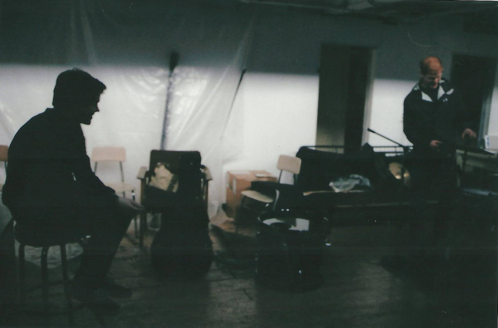
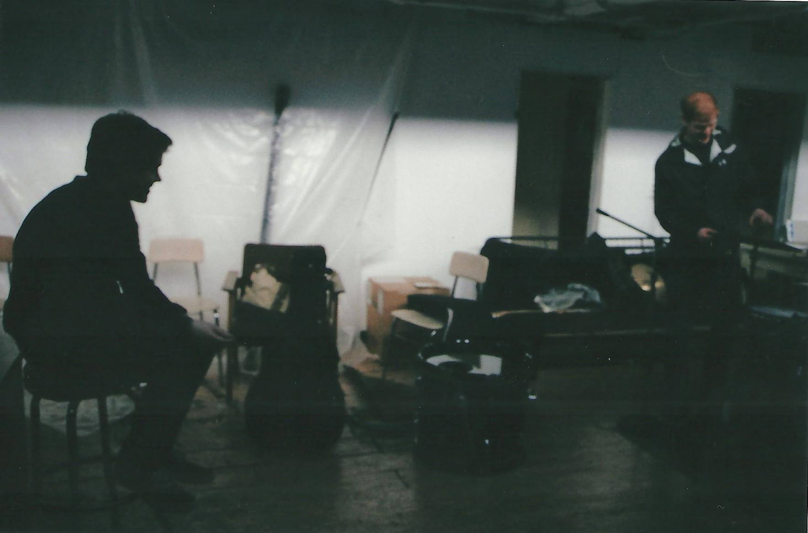
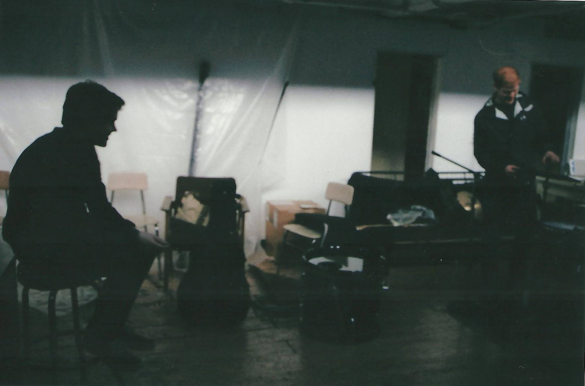

About

Kieran McManus is a singer-songwriter from Queens, NY. He has released several EPs with Shattuck, and is currently recording and performing indie rock solo. Kieran has performed at venues throughout NYC, including: